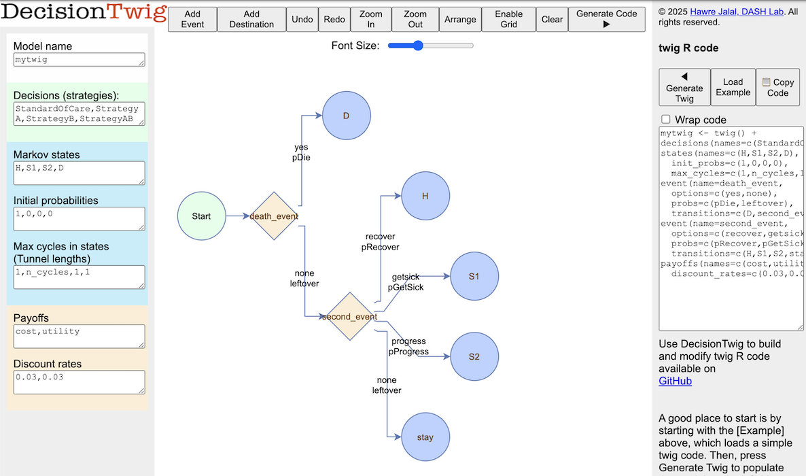
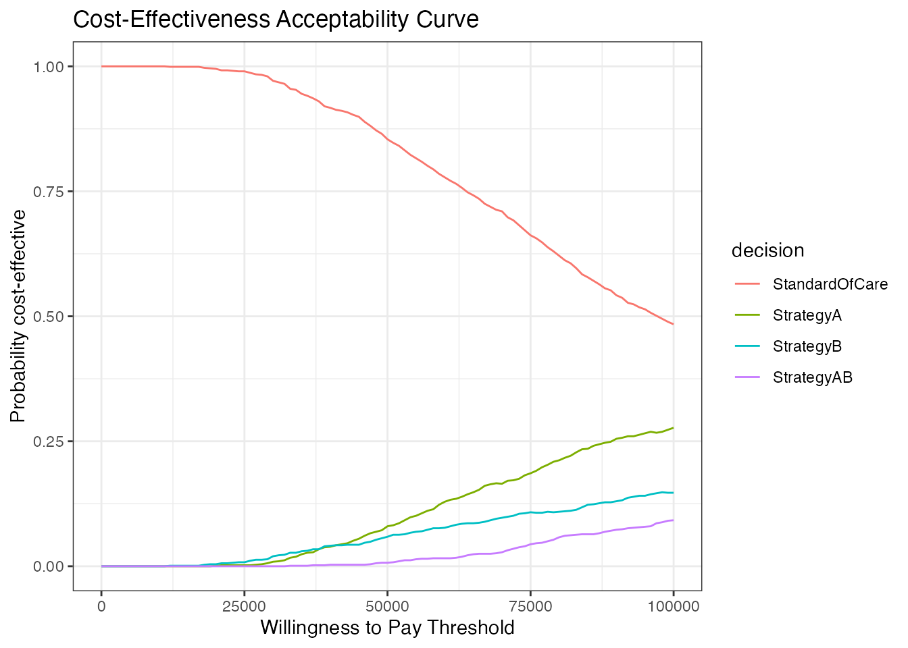

A Tutorial for Time Dependent Markov Model
Source:vignettes/markov_time_dep.Rmd
markov_time_dep.RmdThis vignette is based on our tutorial for time-dependent Markov models in R published in Medical Decision Making:
Alarid-Escudero, F., Krijkamp, E., Enns, E. A., Yang, A., Hunink, M. M., Pechlivanoglou, P., & Jalal, H. (2023). A tutorial on time-dependent cohort state-transition models in r using a cost-effectiveness analysis example. Medical Decision Making, 43(1), 21-41.
First, we load twig library
Twig
model definition
Then, we define the model’s structure twig
n_cycles <- 25 # number of cycles
mytwig <- twig() +
decisions(names = c(StandardOfCare, StrategyA, StrategyB, StrategyAB)) + # define decisions
states(names = c(H, S1, S2, D), # Markov state names
init_probs = c(1,0,0,0), # everyone starts at H
max_cycles = c(1,n_cycles, 1, 1)) + # the cohort can stay in S1 for n_cycles
event(name = death_event, # first event is death
options = c(yes,none), # which 2 options
probs = c(pDie, leftover), # probability function name and its complement
transitions = c(D, second_event)) + # if death occurs go to D, otherwise, go to the next event (second_event)
event(name = second_event, # the second event
options = c(recover, getsick, progress, none), # has 4 options
probs = c(pRecover, pGetSick, pProgress, leftover), # and 3 named probabilities and a complement
transitions = c(H, S1, S2, stay)) + # resulting in transitions to H, S1, S2 or else staying in the original state
payoffs(names = c(cost, utility), # payoff names
discount_rates = c(0.03, 0.03)) # payoff discount rates
#> Note: A states layer detected in your twig - treating Twig as a Markov model.
#> For a decision tree, make sure to remove the states layer.DecisionTwig
In DecisionTwig, this Markov model looks like this: 
Next, we create a data frame of random samples from the model input parameters’ distributions
n_sims <- 1000
# Create the data.table with n_sim rows of random samples
params <- data.frame(
r_HS1 = rbeta(n_sims, 2, 10), # Transition rate with beta distribution
r_S1H = rbeta(n_sims, 5, 5), # Another transition rate with a different shape
hr_S1 = rlnorm(n_sims, log(3), 0.2), # Hazard ratio, log-normal to allow skewness
hr_S2 = rlnorm(n_sims, log(10), 0.2), # Higher hazard ratio, same distribution
hr_S1S2_trtB = rbeta(n_sims, 6, 4), # Hazard ratio under treatment with beta distribution
r_S1S2_scale = rgamma(n_sims, shape = 2, rate = 25), # Scale parameter, gamma distribution
r_S1S2_shape = rgamma(n_sims, shape = 3, rate = 3), # Shape parameter, gamma distribution
c_H = rnorm(n_sims, mean = 2000, sd = 50), # Annual cost, slight variation for simulation
c_S1 = rnorm(n_sims, mean = 4000, sd = 100), # Higher annual cost, slightly varied
c_S2 = rnorm(n_sims, mean = 15000, sd = 500), # Large cost with moderate variation
c_D = 0, # Constant, no variation
c_trtA = rnorm(n_sims, mean = 12000, sd = 200), # Cost of treatment A with small variation
c_trtB = rnorm(n_sims, mean = 13000, sd = 200), # Cost of treatment B
u_H = rbeta(n_sims, 10, 1), # Utility close to 1 for Healthy
u_S1 = rbeta(n_sims, 7.5, 2.5), # Utility less than Healthy, beta distribution
u_S2 = rbeta(n_sims, 5, 5), # Utility for Sicker
u_D = 0, # Utility for Dead is constant
u_trtA = rbeta(n_sims, 9.5, 1), # Utility with treatment A, close to Healthy
du_HS1 = rnorm(n_sims, mean = 0.01, sd = 0.005), # Disutility with slight variation
ic_HS1 = rnorm(n_sims, mean = 1000, sd = 100), # Cost increase with transition
ic_D = rnorm(n_sims, mean = 2000, sd = 100), # Cost increase when dying
p0_H = rbeta(n_sims, 1, 9) # Initial probability of being Healthy
)Probability and Payoff Functions
Then, we define the probability and payoff functions used in the
twig above:
Probability of recovery
only those who are in S1 can recover
pRecover <- function(state, r_S1H){
rRecover <- r_S1H * (state=="S1")
rate2prob(rRecover)
}Probability of getting sick
Only those who are H can get sick
pGetSick <- function(state, r_HS1){
rGetSick <- r_HS1 * (state=="H")
rate2prob(rGetSick)
}probability of progressing
This depends on the state (only those who are in S1 can progress), the decision (different rates for different decisions), and the cycle_in_state (number of cycles spent in a state - tunnel state)
pProgress <- function(state, decision, cycle_in_state,
hr_S1S2_trtB, r_S1S2_scale, r_S1S2_shape){
hr_S1S2 <- hr_S1S2_trtB ^ (decision %in% c("StrategyB", "StrategyAB")) # hazard rate of progression for B or 1 otherwise
r_S1S2_tunnels <- ((cycle_in_state*r_S1S2_scale)^r_S1S2_shape -
((cycle_in_state - 1)*r_S1S2_scale)^r_S1S2_shape) # hazard rate based on cycle_in_state (tunnel) which follows a weibull distribution
# only those who are at S1 can progress
rProgress <- r_S1S2_tunnels * (state=="S1") * hr_S1S2
rate2prob(rProgress)
}probability of dying
Probabilty of dying depends on age. So, we define age-specific
mortality data from the 2015 US Life Tables for ages 24 through 1000.
Then, we define the pDie as a function of the state
(different states have different rates of death), and the cycles since
the simulation start which reflects the cohort’s age.
v_r_mort_by_age <- vector <- c(
0.000979, 0.001014, 0.000999, 0.001070, 0.001087, 0.001162, 0.001167, 0.001213, 0.001289,
0.001331, 0.001375, 0.001420, 0.001490, 0.001550, 0.001616, 0.001657, 0.001747, 0.001902,
0.002052, 0.002173, 0.002395, 0.002559, 0.002807, 0.003023, 0.003349, 0.003712, 0.004085,
0.004490, 0.004905, 0.005364, 0.005806, 0.006253, 0.006775, 0.007395, 0.007895, 0.008418,
0.008974, 0.009666, 0.010456, 0.011384, 0.011838, 0.012667, 0.013593, 0.014700, 0.015732,
0.017340, 0.018758, 0.020967, 0.022917, 0.024913, 0.026767, 0.029707, 0.032412, 0.035982,
0.039238, 0.043595, 0.048727, 0.053735, 0.059911, 0.066618, 0.074051, 0.082190, 0.090754,
0.103968, 0.115093, 0.124341, 0.137872, 0.154177, 0.172393, 0.194100, 0.212654, 0.243752,
0.259087, 0.287781, 0.316429, 0.339149
)
# death depends on the state and age.
pDie <- function(state, cycle,
hr_S1, hr_S2){
r_HD <- v_r_mort_by_age[cycle] # get age-specific mortality
rDie <- r_HD * (state=="H") + # baseline mortality if healthy
r_HD*hr_S1 * (state=="S1") + # multiplied by a hazard rate if S1 or
r_HD*hr_S2 * (state=="S2") # S2
# else 0
rate2prob(rDie)
}Cost
Cost is a function of the state, decision and whether either event have occured. The events capture transition costs.
cost <- function(state, decision, second_event, death_event,
ic_HS1, ic_D, c_trtA, c_trtB,
c_H, c_S1, c_S2, c_D){
# cost of decision is only applied if the state is either S1 or S2
trans_cost_getting_sick <- ic_HS1 * (second_event=="getsick") # increase in cost when transitioning from Healthy to Sick
trans_cost_dying <- ic_D * (death_event=="yes") # increase in cost when dying
c_decision <- (state %in% c("S1","S2")) * (
c_trtA * (decision=="StrategyA") +
c_trtB * (decision=="StrategyB") +
(c_trtA + c_trtB) * (decision=="StrategyAB")
)
# cost of the state is a function of the state
c_state <- c_H * (state=="H") +
c_S1 * (state=="S1") +
c_S2 * (state=="S2") +
c_D * (state=="D")
# combine both
return(c_decision + c_state + trans_cost_getting_sick + trans_cost_dying)
}Utility
Similarly, utility depends on the state, decision and only if the cohort gotsick to apply a transition utility discount for those who make that transition.
utility <- function(state, decision, second_event,
du_HS1, u_H, u_trtA, u_S1, u_S2, u_D){
trans_util_getting_sick <- -du_HS1 * (second_event=="getsick") # apply a utility discount for those who get sick.
# calcualte state utilities. note that S1 will have utility u_trtA if the decision involves A, and another utility if the decision does not involve A.
u_state <- u_H * (state=="H") +
u_trtA * (state=="S1" & decision %in% c("StrategyA", "StrategyAB")) +
u_S1 * (state=="S1" & decision %out% c("StrategyA", "StrategyAB")) +
u_S2 * (state=="S2") +
u_D * (state=="D")
# combine the two utilities.
return(u_state + trans_util_getting_sick)
}Running the twig
We can run the model and check the summary results under
results$mean_ev of average costs and utilities across all
probabilistic analyses. The results also returns the individual
simulation results under results$sim_ev
results <- run_twig(twig_obj = mytwig, params = params, n_cycles = n_cycles, progress_bar = FALSE)
#> Checking Twig syntax ....
#> Twig syntax validation completed successfully.
#> Preprocessing started...
#> Preprocessing completed. Starting simulation...
#>
#> Total time: 4.4 secs
results$mean_ev
#> payoff
#> decision cost utility
#> StandardOfCare 80161.74 13.95844
#> StrategyA 152013.97 14.44080
#> StrategyB 140915.32 14.34537
#> StrategyAB 206832.28 14.89491Parallelization
You can run the same command with parallelization, by setting
parallel = TRUE. This will speed up the simulation by
running each simulation in parallel. [It is commented out here because
testing of the twig package only runs on a single
core.]
# results <- run_twig(twig_obj = mytwig, params = params, n_cycles = n_cycles, parallel = TRUE)Incremental Cost-Effectiveness Ratio (ICER)
using the calculate_icers function adapted from the
dampack package, we can retrieve ICER table by passing the payoffs
summary table.
calculate_icers(results$mean_ev)
#> decision cost utility inc_cost inc_utility ICER
#> StandardOfCare StandardOfCare 80161.74 13.95844 NA NA NA
#> StrategyB StrategyB 140915.32 14.34537 NA NA NA
#> StrategyA StrategyA 152013.97 14.44080 NA NA NA
#> StrategyAB StrategyAB 206832.28 14.89491 126670.5 0.9364688 135264
#> status
#> StandardOfCare ND
#> StrategyB ED
#> StrategyA ED
#> StrategyAB NDCost-Effectiveness Acceptibility Curve (CEAC)
Similarly, we can produce the CEAC curve from the simulation results and specifying a series of willingness to pay (WTP) values.

Summary
This example illustrated the following features of twig
* Markov model * probabilistic anslysis * Multiple decisions * Multiple
states * Multiple sequential events * tunnel states * cycle-dependency *
dependency on prior events in a cycle * transition payoffs * using
parallel computations * expected payoffs across probabilistic analyses *
ICER * CEAC
In addition, various intermediate objects and computations can be
returned by enabling verbose. To reduce the size of the
returned results, this will only use the first PSA sample. For details
on these objects check the documentations.